Meetful is a website that aims to help college students to make meeting planning easier. This project is initialized by UCSD Chinese Computer Community (Triple C). We have published the website online in June 2019. This project is still in progress. Click to try Meetful!
The Team
Triple C Meetful
My Role
UI/UX Design, including but not limited to wireframe, prototypes, testing, visual design.
Communicate with team leaders, developers, and my fellow designer.
Concepts & Background
Why Meetful?
The existing meeting planning websites all have some problems. They are either too complex, inflexible, not visually pleasant, or not mobile friendly.
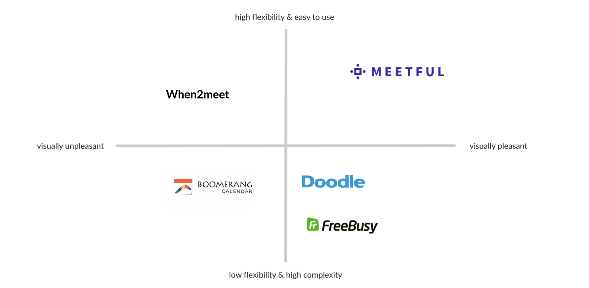When2Meet is the most popular website used by college students. It is convenient and flexible for event participants to choose their available time. Based on participants' schedule, the event organizer is able to come up with most ideal scedule to hold the event. Nonetheless, many users complained that the UI is not visually pleasant, and some parts of design are not user-friendly.
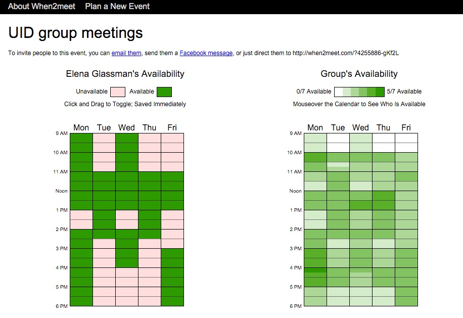
Screenshot of When2Meet
Our project is inspired by When2Meet, while we made considerable improvements of visual design and interaction experience.
Main Improvements
We made several improvements based on When2Meet:
- We put efforts on UI design, making the website visually pleasant by using comfortable color palette, delightful illustrations, and appropriate spacing.
- On When2Meet (left), users drag on the time table to choose a period. This feature is great on computer screen but causes inconvenience on phone screen. The small time table makes it hard to accurately choose a time period with fingers. On Meetful (right), users click on the beginning and on the end to choose a period. Besides, the time table on Meetful almost occupies the whole screen, making it easier to use on mobile phones.
- On When2Meet's result page, different shades of green indicates different availabilities (if there are 6 participants, it will have 6 different shades). The problem is that if the number of participants is big, the difference of shades is hard to perceive. In comparison, Meetful uses only 4 different shades to represent different availabilities —— all available, >75% available, >50% available, and <50% available. Besides, Meetful also provides Top 5 Results, since these are what the organizer cares about the most.


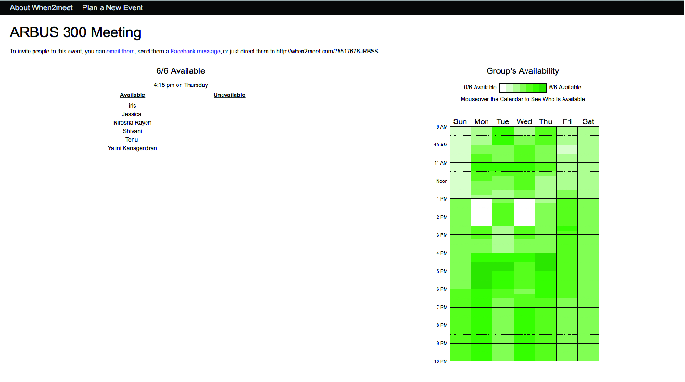
When2Meet
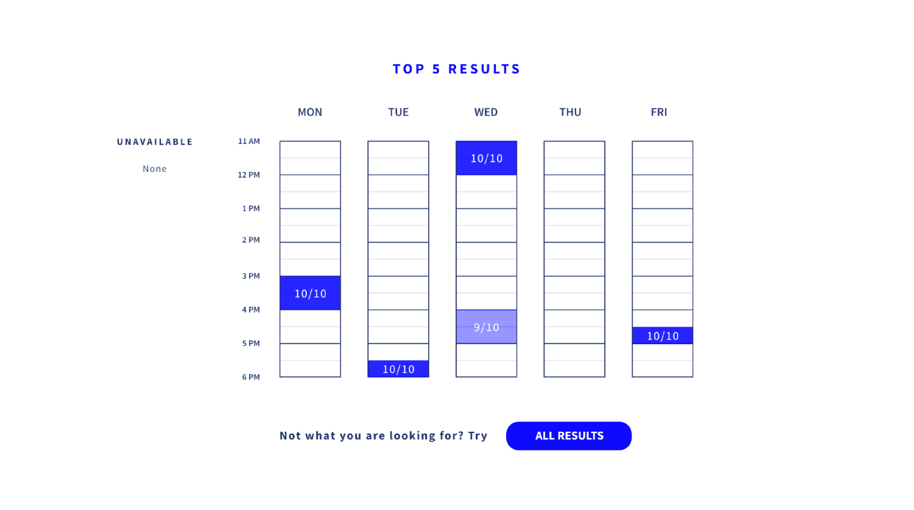
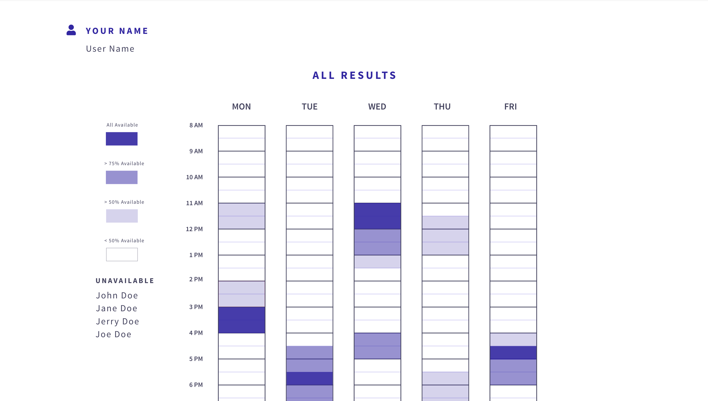
Meetful
Feature Highlights
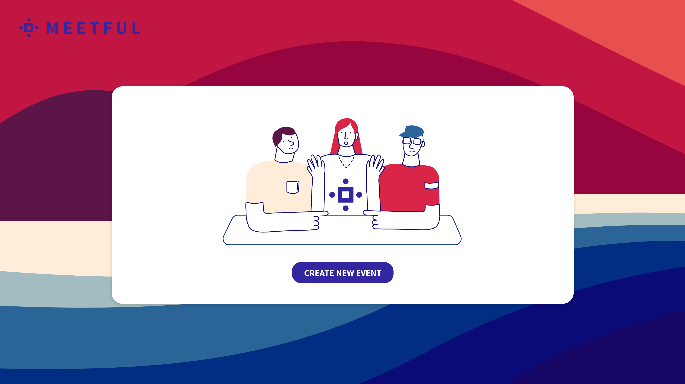
Starting Page
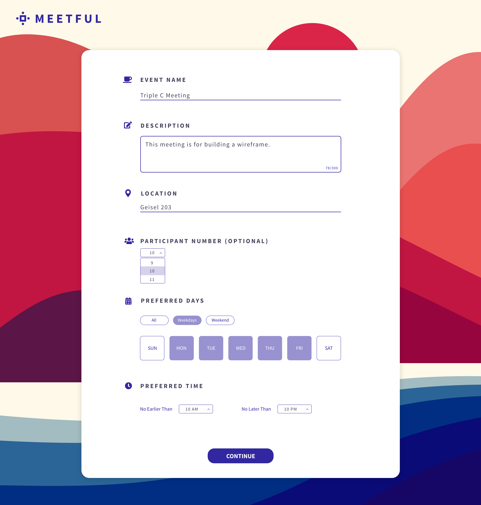Create a meeting
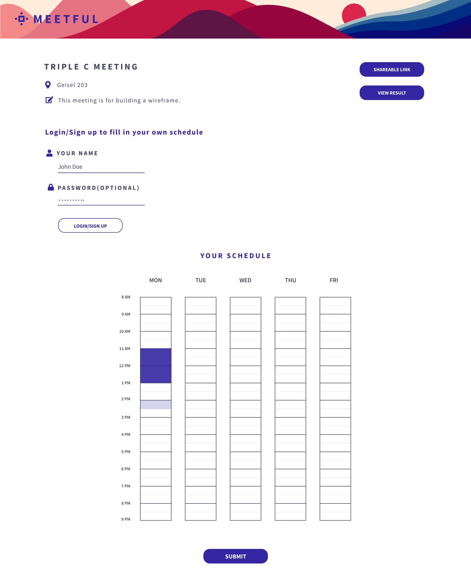Add your own schedule and inviting people to join the meeting.
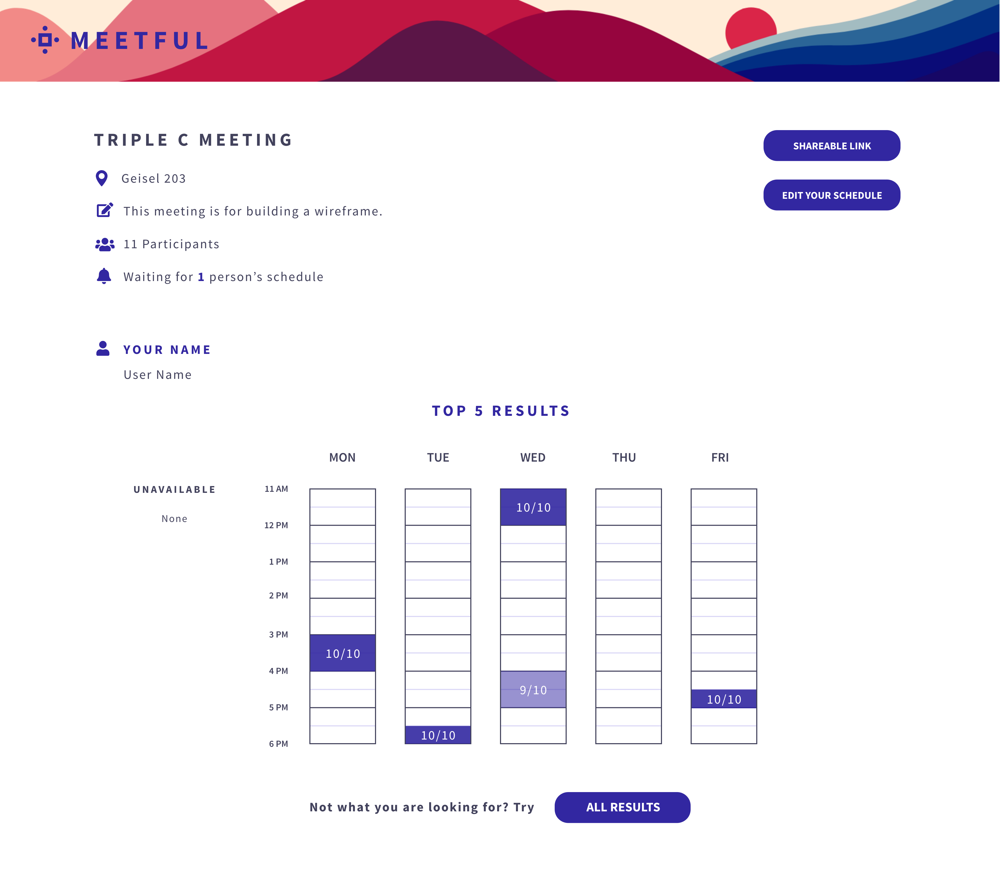Top 5 results for ideal meeting time
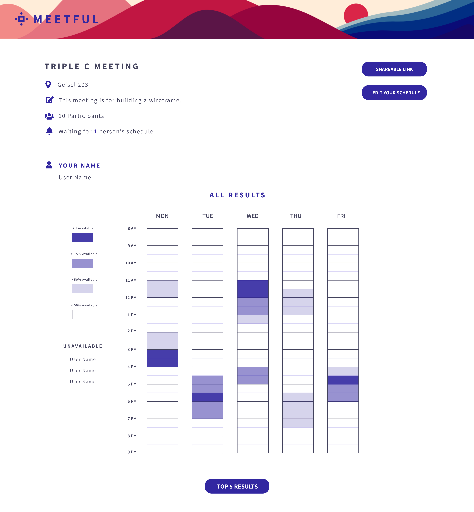All results for ideal meeting time
Wireframe
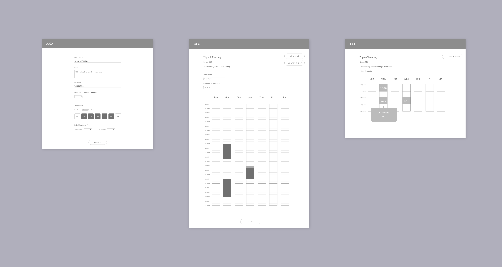
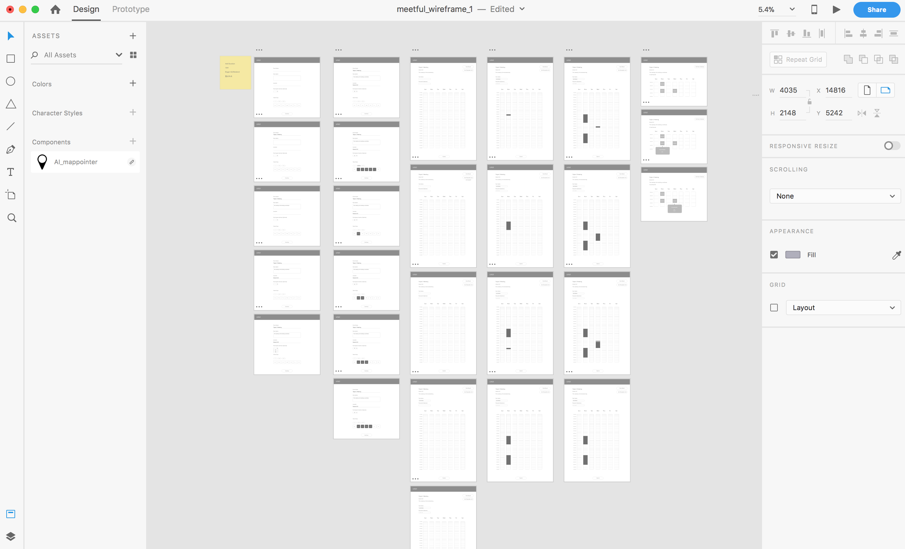
High Fidelity Prototype
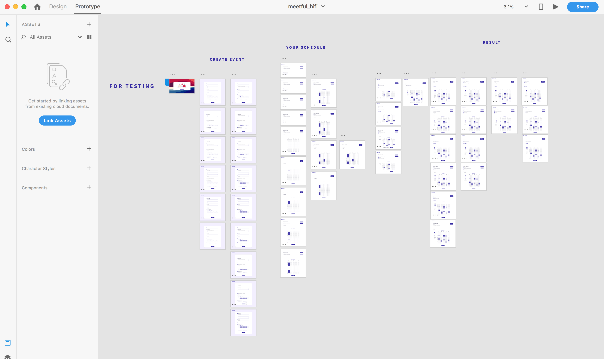
Visual Design
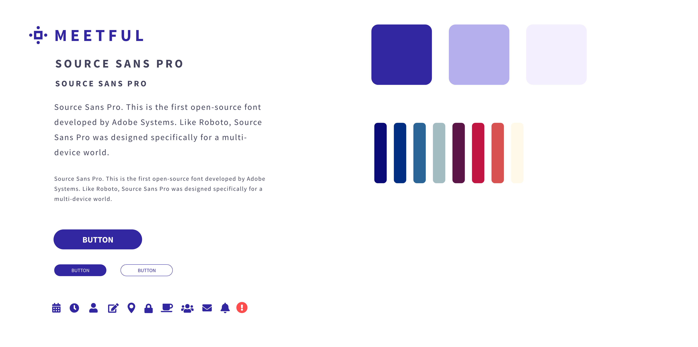


© 2019 Jiayu Luo.